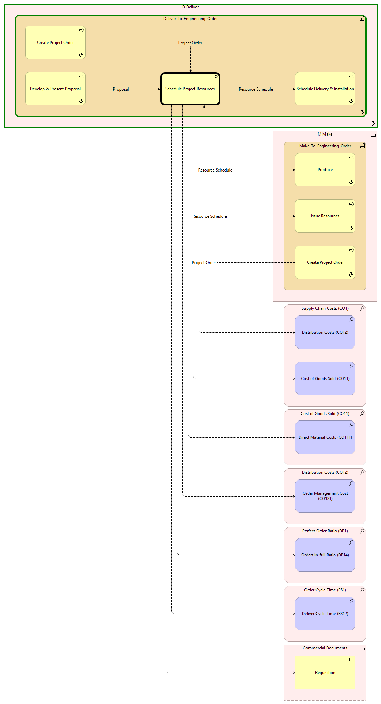

Schedule Project Resources - Context
(
)

generated_by
build_archi_xml.py::gen_proc_node_context_view
generator_path
pedro/capabilities/build_archi_xml_assign/build_archi_xml_assign.py
run_at
2026-10-10T17:59:31
view_type
process_context
D Deliver
Deliver-To-Engineering-Order
Create Project Order
Create Project Order - Context
Schedule Delivery & Installation
Schedule Delivery & Installation - Context
Schedule Project Resources
Develop & Present Proposal
Develop & Present Proposal - Context
Deliver-To-Engineering-Order - Processes
D Deliver - Processes
M Make
Make-To-Engineering-Order
Create Project Order
Create Project Order - Context
Produce
Produce - Context
Issue Resources
Issue Resources - Context
Make-To-Engineering-Order - Processes
M Make - Processes
Supply Chain Costs (CO1)
Cost of Goods Sold (CO11)
Distribution Costs (CO12)
Cost of Goods Sold (CO11)
Direct Material Costs (CO111)
Distribution Costs (CO12)
Order Management Cost (CO121)
Perfect Order Ratio (DP1)
Orders In-full Ratio (DP14)
Order Cycle Time (RS1)
Deliver Cycle Time (RS12)
Commercial Documents
Requisition
Project Order
Create Project Order
Schedule Project Resources
Resource Schedule
Schedule Project Resources
Schedule Delivery & Installation
Resource Schedule
Schedule Project Resources
Issue Resources
Resource Schedule
Schedule Project Resources
Produce
Schedule Project Resources
Cost of Goods Sold (CO11)
Schedule Project Resources
Direct Material Costs (CO111)
Schedule Project Resources
Distribution Costs (CO12)
Schedule Project Resources
Order Management Cost (CO121)
Schedule Project Resources
Orders In-full Ratio (DP14)
Schedule Project Resources
Deliver Cycle Time (RS12)
Schedule Project Resources
Requisition
Proposal
Develop & Present Proposal
Schedule Project Resources
Project Order
Create Project Order
Schedule Project Resources